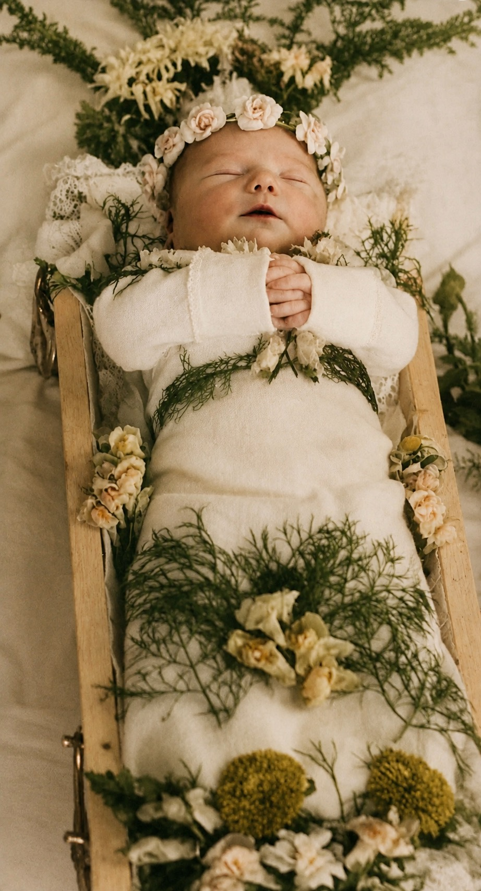

1952
Wir waren sechs Geschwister. Ich bin das zweitjüngste. Genau ein Jahr vor mir, am 6. September 1952, wurde meine Schwester Elisabeth geboren. In der Nachbarschaft gab es einiges Hallo, denn nur einen Tag zuvor war im Haus nebenan Heiner zur Welt gekommen, mein späterer bester Freund. Innerhalb von zwei Tagen waren damit in zwei benachbarten Häusern zwei Kinder geboren worden. Heiner lebte viele Jahre, doch auch er musste später ein tragisches Schicksal hinnehmen. Über ihn gibt es eine eigene Geschichte in dieser Sektion und einige weitere in meinen Kindheitserinnerungen.
Elisabeth wurde im Krankenhaus in Morbach geboren. Sie hatte wie meine ältere Schwester Ulli pechschwarzes Haar. Zunächst schien alles in Ordnung zu sein. Doch meine Mutter bemerkte bald, dass Elisabeth ungewöhnlich schnell atmete und offenbar nicht richtig Luft bekam. Hin und wieder wurden die Lippen etwas blau. In den folgenden Tagen verstärkte sich das. Elisabeth wurde immer blauer, und ihre Atemnot nahm zu.
Am vierten oder fünften Lebenstag wurde die Situation kritisch. Unser Hausarzt, Dr. Dörr, kam, untersuchte Elisabeth und vermutete einen angeborenen Herzfehler. Viel mehr konnte man damals nicht feststellen und schon gar nicht tun.
Meine Mutter war tief gläubig. Ihr Glaube half ihr, das Geschehen anzunehmen. Sie betete und fehlte um das Leben dieses kleinen Mädchens. Als es jedoch dem Ende entgegen zu gehen schien sagte sie: „Lieber Gott, wenn du das Kind haben möchtest, dann nimm es. Du wirst einen Grund dafür haben.“ So einfach formulierte sie das. Meinem Vater ging der Tod des Kindes wohl noch näher. Er konnte sich nicht auf dieselbe Weise damit abfinden. Trotzdem trugen beide die Situation mit großer Tapferkeit.
Am fünften, sechsten oder siebten Lebenstag – ganz genau weiß ich es nicht – schlief die kleine Elisabeth friedlich ein. Aber sie hatte tiefblaue Lippen, charakteristisches Zeichen eines angeborenen Herzfehlers. Auf dem Foto, das von ihr geblieben ist, kann man das noch erkennen.

Mit meinem späteren Wissen als Kinderarzt vermute ich heute, dass Elisabeth eine Transposition der großen Arterien hatte, eine sogenannte TGA. Sicher feststellen lässt sich das nach so vielen Jahren natürlich nicht mehr. Der Verlauf würde allerdings sehr gut dazu passen.
Bei diesem Herzfehler sind die beiden großen Gefäße vertauscht. Normalerweise fließt das sauerstoffarme Blut aus dem Körper durch die rechte Herzhälfte in die Lunge. Dort nimmt es Sauerstoff auf, gelangt über die linke Herzhälfte zurück und wird durch die Aorta wieder in den Körper gepumpt. Bei einer TGA sind die Aorta und die Lungenarterie an die jeweils falsche Herzkammer angeschlossen. Dadurch entstehen zwei Kreisläufe, die nebeneinanderher laufen: Das sauerstoffarme Blut fließt vom Körper zum Herzen und gleich wieder zurück in den Körper. Das sauerstoffreiche Blut aus der Lunge wird dagegen vom Herzen erneut in die Lunge gepumpt. Es kommt dort an, wo ohnehin schon genug Sauerstoff vorhanden ist.
Im Mutterleib funktioniert das zunächst, weil das Kind seinen Sauerstoff über die Plazenta erhält und zwischen den Kreisläufen mehrere natürliche Verbindungen bestehen. Auch unmittelbar nach der Geburt kann sich durch diese Verbindungen noch sauerstoffreiches mit sauerstoffarmem Blut mischen. Eine davon ist der Ductus arteriosus, ein kleiner Verbindungsgang zwischen Lungenarterie und Aorta. Er beginnt sich nach der Geburt zu schließen. Wenn gleichzeitig keine andere ausreichend große Verbindung vorhanden ist, gelangt immer weniger sauerstoffreiches Blut in den Körper. Das Kind wird blau und gerät zunehmend in Atemnot. Genau so scheint es bei Elisabeth gewesen zu sein.
Heute könnte man ein solches Kind mit großer Wahrscheinlichkeit retten. Zunächst würde man den Ductus arteriosus mit einem Medikament offen halten. Falls die Vermischung des Blutes trotzdem nicht ausreicht, kann zusätzlich die Verbindung zwischen den beiden Vorhöfen mit einem Ballonkatheter erweitert werden. Anschließend werden bei der sogenannten arteriellen Switch-Operation die Aorta und die Lungenarterie an ihre richtigen Herzkammern angeschlossen. Auch die Herzkranzgefäße müssen dabei umgesetzt werden. Es ist eine anspruchsvolle Operation, aber sie gehört heute in spezialisierten Kinderherzzentren zum etablierten Vorgehen. Im Jahr 1952 gab es diese Möglichkeiten noch nicht.
Elisabeth starb wenige Tage nach ihrer Geburt. Auf den Tag genau ein Jahr nach ihrer Geburt bekamen meine Eltern mich. Und ich durfte um so viele Jahre länger als Elisabeth leben - ein wirklicher Glückspilz.